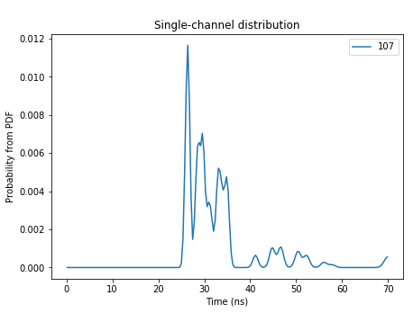
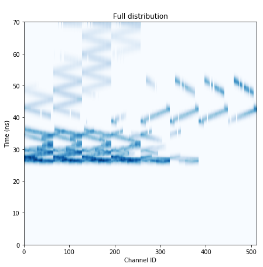
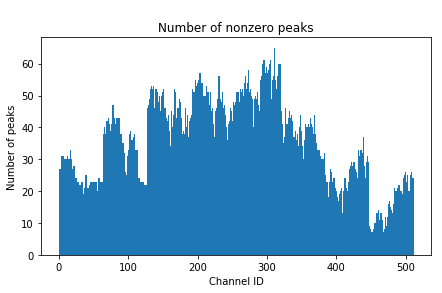

Transient time spread (TTS) is something which needed to be implemented. To implement it, we convolve the following waveform with each of the peaks in each channel PDF when calculating the probabilities:
<TTS>
<Gauss component="term-1">
<fraction>0.5815</fraction>
<mean unit="ps">-13.59</mean>
<sigma unit="ps">31.97</sigma>
</Gauss>
<Gauss component="term-2">
<fraction>0.2870</fraction>
<mean unit="ps">29.03</mean>
<sigma unit="ps">53.39</sigma>
</Gauss>
<Gauss component="term-3">
<fraction>0.1315</fraction>
<mean unit="ps">273.0</mean>
<sigma unit="ps">340.2</sigma>
</Gauss>
</TTS>
I do the convolution analytically, as the convolution of two Gaussians is well-defined and much easier to implement than actually carrying out the operation on full waveforms. This convolution method is described in detail in both the notebook notebooks/AnalyticLikelihoods.ipynb and in the Overleaf project (in the file reproducing.tex).
With the convolution implemented, I made a few plots showing its effects on the likelihood distributions.
These plots are for a distribution which looks like this without the TTS:
 Thus, it appears that the TTS has been implemented correctly. Its effects are definitely present, and not too substantial, as we would hope.
As we found yesterday, it appears that we need to put a little more work into finding the correct number of peaks to write out. I did some research into a JaggedArray class from the Awkward Arrays packaged (awkward), and implemented it to write out all of the peaks for every channel PDF. Then, I added the cut on number of peaks in my analysis notebook to analyze how writing out different numbers of peaks changes the distribution. For one module PDF, here are plots of the full distribution for various cuts on the number of peaks (where we take the largest n peaks by their area).

These are for a module with a number-of-peaks distribution as follows:
